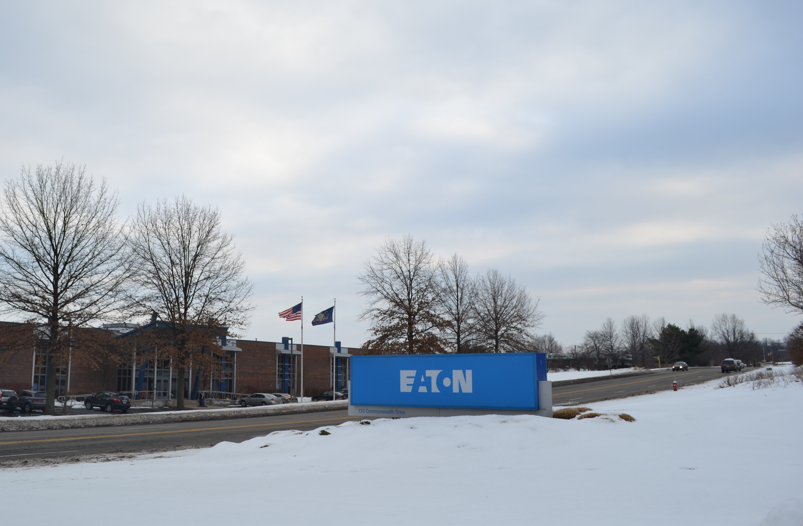
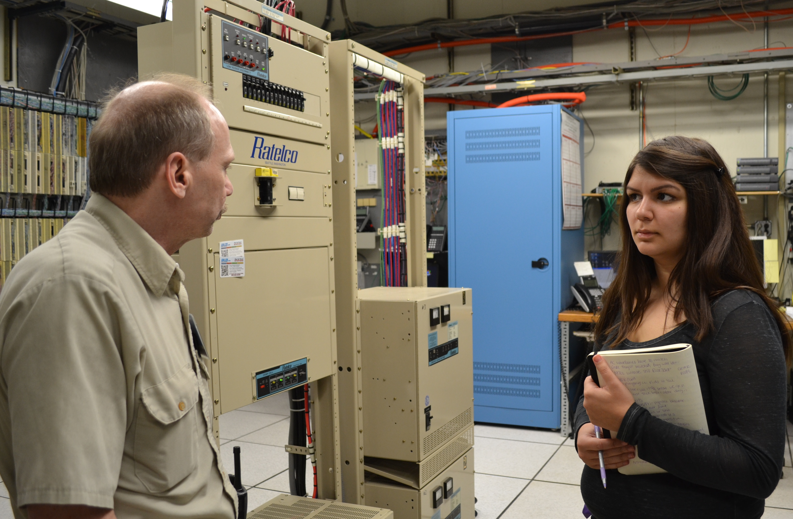
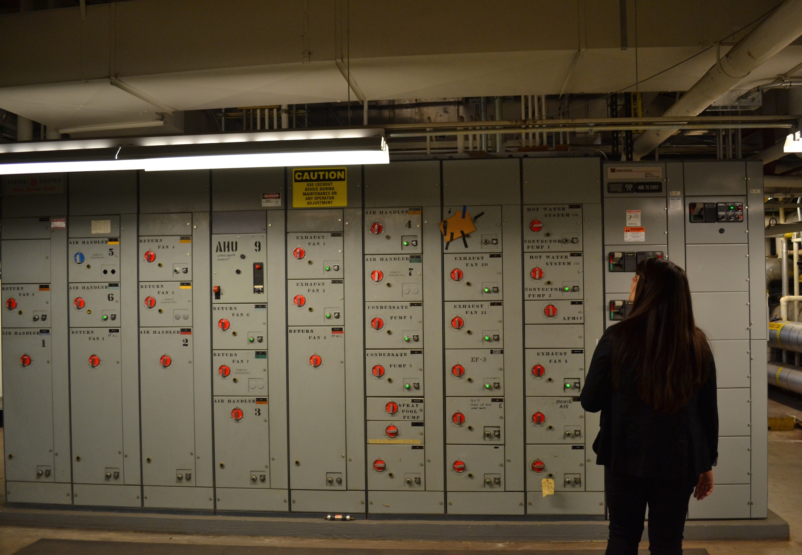
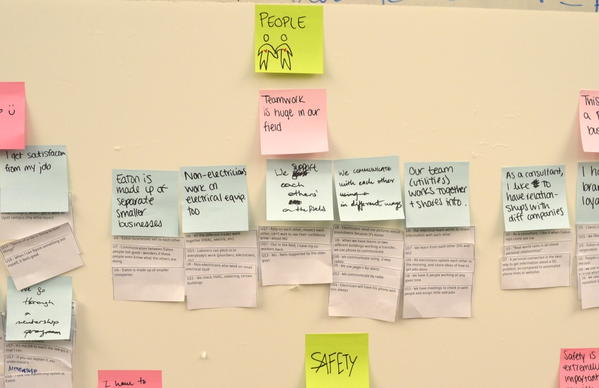
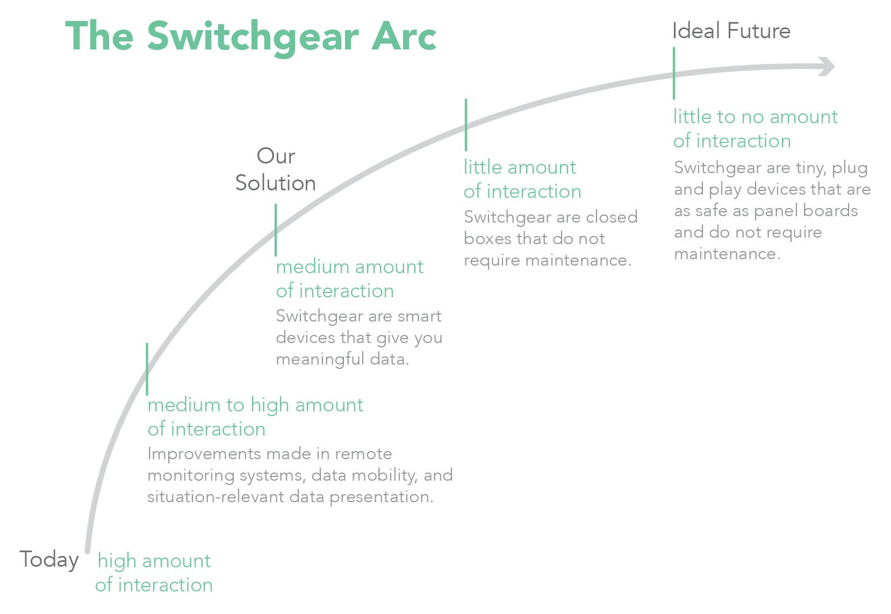
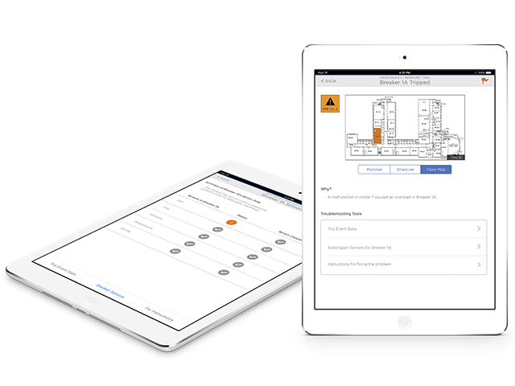
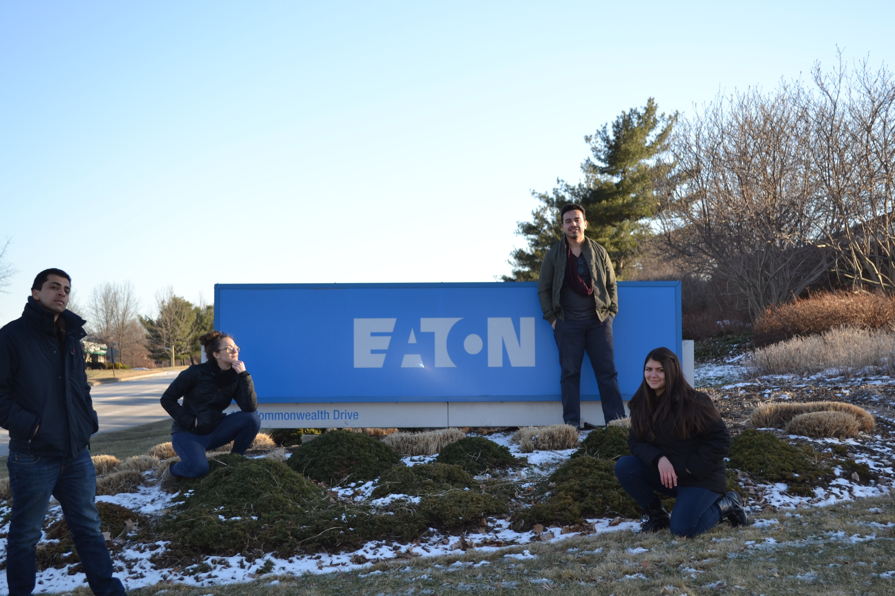

Eaton Capstone Project
My Role
- User Research Lead
Process
- Contextual Interviews
- Guided Storytelling
- Touchstone Tours
- Business Origami
- Affinity Diagramming
- Cultural Diagrams
- Customer Journey Maps
Client
Teammates
Timeline
- 8 months
- Jan - Aug 2014
- In progress

About
My capstone project focuses on Eaton Switchgear, which are the large gray boxes that manage power supplies going into buildings. My team's goal is to create the future of switchgear-human interaction.







